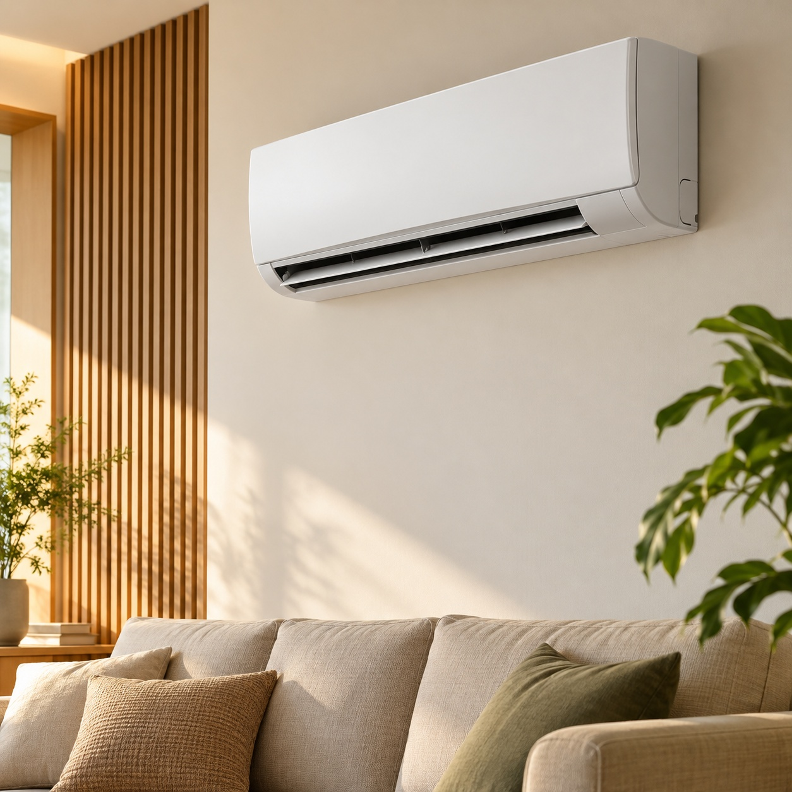

Imagem ilustrativa01 / OPÇÕES PARA COTAÇÃO
Split Convencional ou Inverter
A tecnologia que combina com sua necessidade.
Conheça as opções de split convencional ou inverter e encontre o equipamento adequado para o seu espaço. Converse com a Total Ar e consulte os modelos disponíveis para cotação.